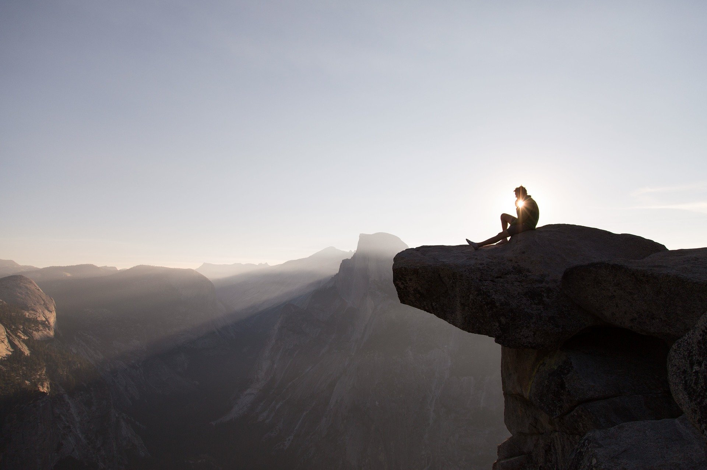
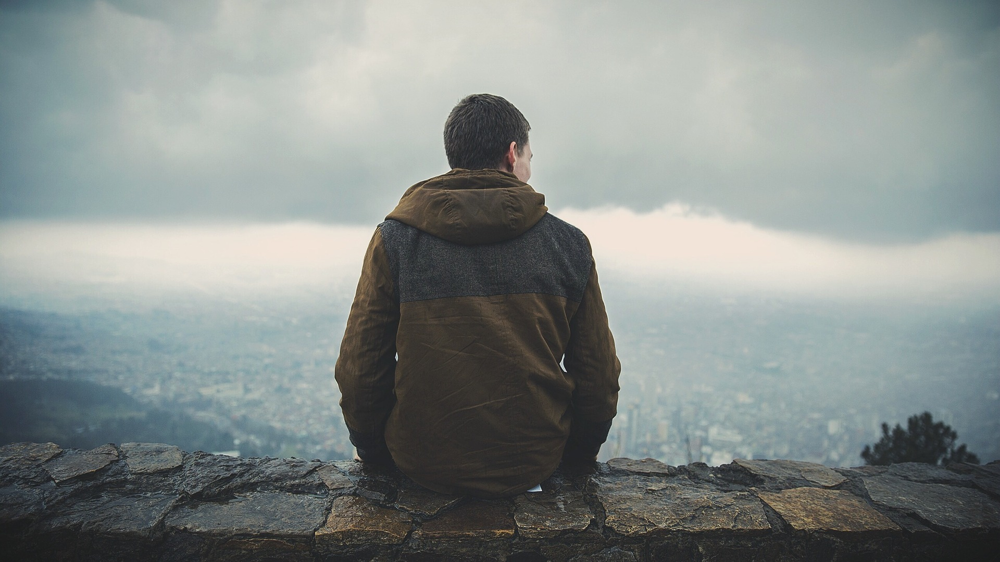
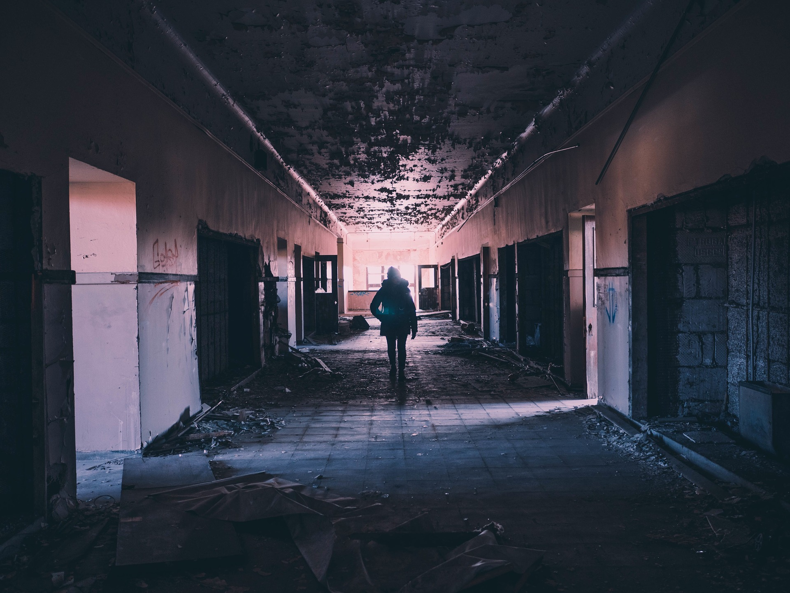

A little something about me.
I am a person who is positive about every aspect of life. There are many things I like to do, to see, and to experience.
I like to dream; I like to listen. I like to feel the music flowing on my face.
I like to look at the clouds in the sky with a blank mind, I like to do thought experiment when I cannot sleep in the middle of the night.


